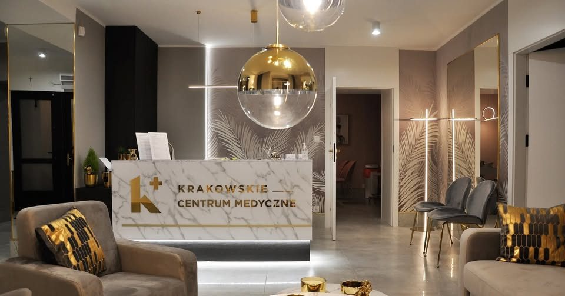

Przemyśl · Rynek 26
Ginekologia, położnictwo, kardiologia, dermatologia i urologia prowadzone przez lekarzy, którzy na co dzień pracują w krakowskich szpitalach klinicznych.

O centrum
Centrum otworzyli w styczniu 2022 roku dr n. med. Karolina Jakubiec-Wiśniewska, specjalistka położnictwa i ginekologii, oraz lek. Paweł Wiśniewski, kardiolog. Oboje pochodzą z Przemyśla.
Nazwa nie jest ozdobnikiem. Codzienna praca w krakowskich ośrodkach o wysokim stopniu referencyjności to źródło standardów, procedur i sprzętu, które przenieśliśmy tutaj.
Mieszkańcy Przemyśla i okolic nie muszą jeździć po diagnostykę na drugi koniec Polski. Gdy leczenie wymaga zaplecza szpitalnego, prowadzimy pacjenta dalej w Krakowie.
Nowoczesne, dobrze wyposażone gabinety. Kameralne, gustownie urządzone i dostępne bez barier architektonicznych.
Od otwarcia zakres świadczeń stale rośnie. Do położnictwa, ginekologii i kardiologii dołączyły dermatologia i urologia, a rejestr obejmuje także poradnię neurologiczną oraz gabinet diagnostyczno-zabiegowy z punktem pobrań.
Zakres opieki
Od pierwszej konsultacji, przez badanie obrazowe, po materiał wysłany do laboratorium i wynik odebrany online.
Prowadzenie ciąży, w tym ciąż wysokiego ryzyka, medycyna płodowa, USG położnicze i ginekologiczne, cytologia.
Zobacz szczegóły › KardiologiaDiagnostyka i leczenie chorób serca. ECHO serca i EKG wykonywane na miejscu, podczas jednej wizyty.
Zobacz szczegóły › DermatologiaKonsultacje dla dorosłych i dzieci, trychologia, dermatoskopowa ocena znamion, krioterapia zmian skórnych.
Zobacz szczegóły › UrologiaDiagnostyka i leczenie chorób układu moczowego oraz męskiego układu płciowego, USG urologiczne.
Zobacz szczegóły › Diagnostyka i laboratoriumUSG, punkt pobrań, badania mikrobiologiczne, cytologiczne i histopatologiczne. Wolne płodowe DNA.
Zobacz szczegóły › Ginekologia estetycznaRewitalizacja okolic intymnych, terapia blizn poporodowych, leczenie wysiłkowego nietrzymania moczu.
Zobacz szczegóły ›Profilaktyka
Rak piersi jest najczęstszym nowotworem u kobiet i coraz częściej rozpoznaje się go u pacjentek młodych. Badanie ultrasonograficzne pozwala wychwycić zmiany na wczesnym etapie, takie, których nie wyczuje się podczas badania palpacyjnego.
USG piersi bywa zalecane szczególnie pacjentkom w ciąży po 35. roku życia oraz zawsze wtedy, gdy pojawi się niepokojąca zmiana.
Rejestracja
Rejestracja od poniedziałku do soboty, w godzinach 9:00–18:00. Godziny przyjęć zależą od grafiku lekarza, termin potwierdzamy przy rejestracji.
Wolisz napisać? kontakt@krakowskiecentrummedyczne.pl albo Messenger.